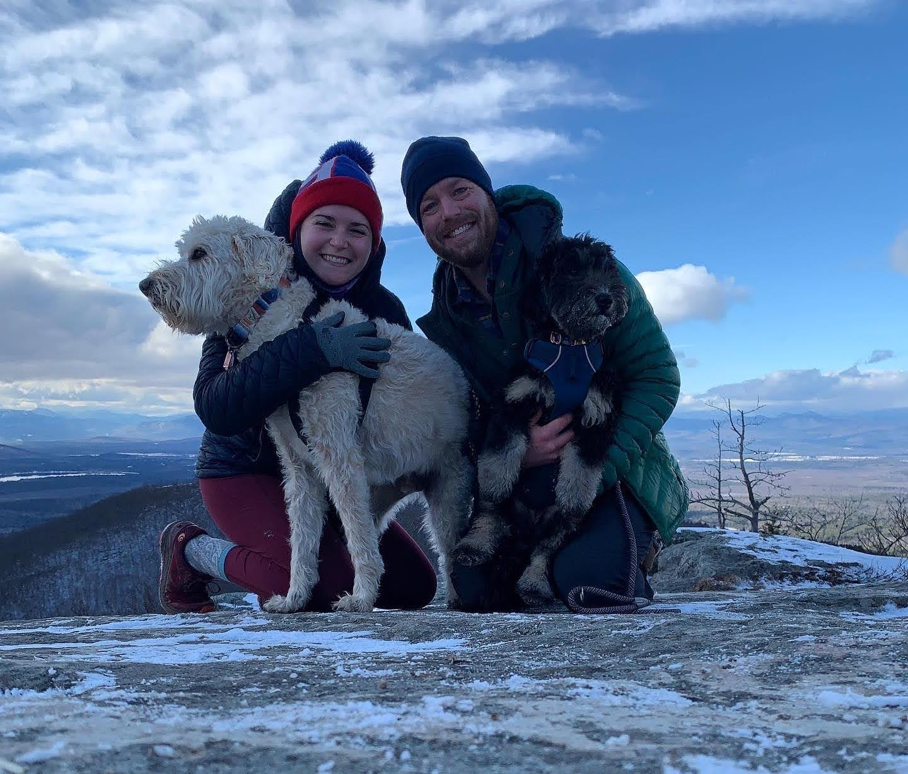

Amanda: Artist
When I was a kid, I wanted to be an artist. I took art classes and cried when, in kindergarten, someone took the “future job” of artist before I could and I had to pick architect instead. Because obviously, there couldn’t be two artists. I spent Christmas of 2017 cleaning out my childhood closet, going through the entire collection of every scribble and Cray-Paz piece I crafted and that my mom saved. Looking at those pieces, I wouldn’t say I was destined to be an artist.
But now my job is to look at information and organize it - be it words, sticky notes, sketches, thoughts, visual designs. It’s artistry of a different kind than I imagined I would be doing, but artistry all the same.
Amanda: Writer
My background is in words. I wrote throughout my youth and then through college, earning a bachelor’s degree in fiction writing and philosophy and later, a master’s in professional writing. But writing the words wasn’t really where my love settled - organizing the words was. The puzzle-putting-togetherness of information architecture captured my passion and swept me up.
Amanda: Designer
At the time that I was falling in love with information architecture, the industry was falling in love with UX generalism. So, I quickly transitioned from information architect to UX designer, wearing the hats of researcher, IA, interaction designer, visual designer, and content strategist. Then, I discovered the calm of designing within the rigidity of native mobile apps, and joy of solving the puzzle of building and maintaining an efficiently organized, foundationally usable design system for multiple platforms. When I felt too far away from the day to day problem solving of product design, I transitioned back into agency life and was fortunate enough to hop into and out of some amazing client problems.
Amanda: Strategist
But agency life was tough and I missed the SME-ness of being an in-house designer so once again, I transitioned into a more long-term design role, first as a product designer and now, as a design strategist with some moonlighting still playing with pixels.
Amanda: Human
Outside of my day job, you can find me running the Aerial Arts program at EVO Rock + Fitness in Portland, Maine, doing the daily NYT crossword puzzle, and walking our neighborhood beach with our two dogs and my husband, Rob.
